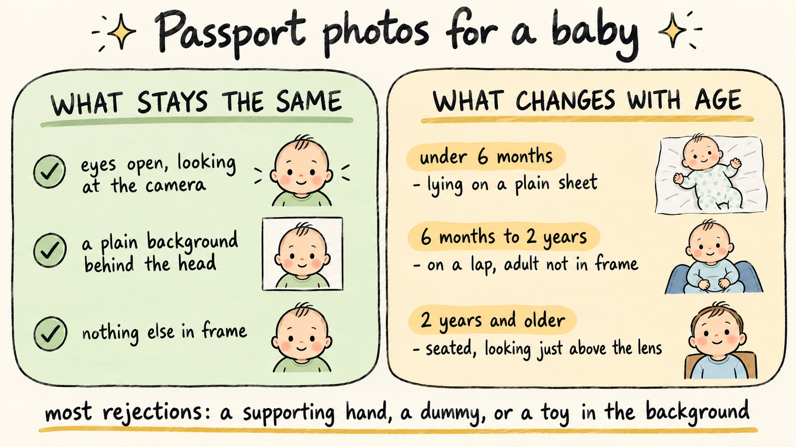

Applying for a Child's First Passport
Travel Document Vault
Key Takeaways
- Consent to apply is different from consent to travel. Your child needs written permission from all parents or guardians before the application can go in.
- Most applications ask for three types of evidence: proof of identity (birth certificate), proof of parents' identity, and proof of parental relationship.
- Baby passport photos have specific rules. Eyes must be open and looking at the camera, with no dummies, toys, or other hands visible - and the background behind the child's head must be plain and clear.
- Check everything the moment it arrives. Spelling, parent names where they appear, expiry date - especially since child passports expire faster than adult ones.
- One parent cannot sign alone unless there is a court order, sole legal guardianship, or the other parent is deceased. If this is your situation, your passport office has a specific process to follow.
Your child's first passport is something you only do once - which means you get to learn the rules before it happens, rather than discovering them at the counter. The application itself is straightforward, but consent rules and photo requirements vary by country, and a small mistake at the start means a rejected application and a delayed trip.
What makes a first-time application different is that you are proving the child's identity from scratch, and that process is deliberately careful. You also need proof that you have the right to apply on their behalf.
Consent to Apply Is Not the Same as Consent to Travel
These two things are often confused, and they matter for different reasons. Consent to apply means both parents agree the child should have a passport. Consent to travel means both parents agree the child should travel on a specific trip - which you may need to prove at the border if you are travelling without the other parent.
This article covers the application consent. The distinction matters because you might need one without the other. A child can have a valid passport that both parents agreed to issue, but that does not automatically mean both parents have consented to every trip. See our guide to child travel consent letters and travelling without both parents for the travel side of the equation.
Who Has to Agree Before the Application Can Go In
The default rule is that all adults with parental responsibility for the child must consent to the passport application. For most families this means both married parents; for unmarried couples, it means both partners if both are listed on the birth certificate as parents. Anyone with a court order or sole legal guardianship falls under different rules, and your passport office will explain the specific process when you ask.
These exceptions are real and worth knowing. A deceased parent cannot sign, and a parent who has lost parental responsibility through a court order may not have the right to consent either. Restraining orders and custody restrictions can also exclude a parent by law. Each of these situations has its own application process and its own evidence requirements, so there is no single answer that covers all of them.
If you are applying alone because you have sole legal guardianship, or because the other parent is deceased, or because there is a court order in place, contact your passport office directly with the court documents. They will tell you exactly what you need to submit to prove you have the right to apply without the other parent.
What a First Application Usually Asks You to Prove
Passport offices want three things when you apply for a child's first passport: proof of the child's identity, proof of the parents' identity, and proof of the parents' relationship to the child.
Proof of identity for the child typically means a birth certificate, though some countries accept hospital birth records while others require a certified copy. Your local office publishes the exact requirements.
Proof of the parents' identity means documents like a national ID, driving licence, or an existing passport. The issuing office specifies which documents they will accept.
Proof of relationship to the child usually comes from the birth certificate itself if both parents are named. If only one parent is listed, you may need to provide a court order, a custody agreement, or a guardianship certificate to show that the second parent also has the right to make decisions about the child.
Some countries use a countersignatory system. This means a trusted professional - a teacher, doctor, lawyer, or similar - signs a form to vouch that the application is genuine and the photo is a true likeness of the child. If your country uses this system, you need to identify someone who is willing to do it before you apply. Ask your passport office which professions they accept.
Photographing a Baby for a Passport

This is where many first-time applications fail. A baby or small child cannot follow photo rules the way an adult can: babies cannot sit up, toddlers cannot sit still or understand instructions, and newborns cannot look at the camera on command. Passport photo standards were written for adults, and you need to understand how to adapt them when the subject is a child who weighs 5 kilos and moves constantly.
The core rules are the same: the child's eyes must be clearly open and looking at the camera, with a plain background behind their head and nothing else in frame. What changes is how you make that happen.
For a newborn or baby under 6 months: photograph them lying down on a plain white or pale sheet or blanket. The sheet becomes the background. The child's head fills the upper third of the frame. Position yourself directly above so the baby is looking straight up at the camera, eyes open - if the baby is sleepy, wait for a moment when they are alert. No toys, no dummies, no hands, no other person visible in the frame except the baby's own head and shoulders.
For a baby 6 months to 2 years: you can seat them on an adult's lap, but the adult's body and hands must not appear in the photo at all. The baby's head fills the frame. The plain background is behind the baby only - not visible anywhere else. A white wall works. So does a plain sheet hung behind them. Angle the shot so the baby's eyes are looking toward the camera, but because babies this age move constantly, you will probably take 20 photos to get one where the eyes are open and looking in the right direction.
For toddlers 2 years and older: seat them in front of the plain background on a chair or standing if they can stand. The eyes should be looking straight at the camera, which is harder than it sounds because toddlers do not take instructions. Sing a song, make a funny noise, or ask them to look at a point just above the camera lens. You want them to be looking up slightly, which reads better in photos anyway. Again, take many shots - you only need one where they are looking at the camera with both eyes clearly open.
The most common mistakes: a parent's hand supporting the baby's head in frame (not allowed), a dummy still in the baby's mouth (must be removed), someone else partially visible at the edge (must not appear), toys or objects in the background (remove them), and the background not being clearly visible behind the child's head (step back or adjust the angle so the plain background is visible).
If the baby falls asleep or cries during attempts, stop and try again another time. Your passport office has seen every variation of this. They would rather receive a clear photo of an alert baby than a blurry one of a distressed child.
When One Parent Cannot Sign
Your passport office cannot issue the document without legal evidence that you have the right to proceed alone, whether the other parent is unwilling to sign, cannot be located, or has lost parental responsibility. This is a legal requirement that exists to protect the child, not a negotiation.
If the other parent is missing or refuses: you need a court order. This might be an existing custody order, a guardianship order, or a specific court ruling that you have sole parental responsibility. Some countries allow you to apply to the court for permission to issue the passport without the other parent's consent if you can show that the child would be harmed by delay or that the other parent is unfit to be consulted. This varies by country and by local court practice - ask your passport office or a family lawyer what the process is where you are.
Where the other parent has died: you need the death certificate. Your passport office should not need anything else beyond that to process the application.
Where there's a restraining order or a custody restriction: bring the court order with you. It shows the office exactly what permissions and restrictions are in place.
What to Check the Day It Arrives
Once the passport is issued and delivered to you, spend five minutes checking it before you file it away. You are looking for three things that are easy to fix now and a nightmare to fix at the airport.
Check the spelling. Your child's name must be spelled exactly as it appears on the birth certificate or the identity document you used to apply. If it is wrong, the passport office can usually issue a replacement at no cost. If you do not notice until you are at the airport, the airline may refuse to board because the name on the ticket will not match the passport.
Check the parent names where they appear. Some countries print the names of the parents or guardians on the inside of a child's passport. If these names are misspelled or wrong, contact the office to have it corrected.
Check the expiry date. This is critical for children because child passports expire much sooner than adult passports. When you book travel, you need to know exactly when this document stops being valid. Write it down. Set a reminder. Child passports expiring unexpectedly is one of the most common reasons families have to cancel or reschedule trips.
If anything is wrong, contact your passport office within days. Corrections are usually free when reported quickly. Do not wait, because the longer you leave it the more complicated the process becomes.
Frequently Asked Questions
Who must consent to a child's passport application?
Generally, all adults with parental responsibility for the child must consent. This includes married couples, unmarried couples listed on the birth certificate, and anyone with legal guardianship. Sole parental responsibility, a deceased parent, and court orders create exceptions - the issuing authority decides whether to proceed without both parents' signatures.
What documents do I need for a child's first passport application?
At minimum: proof of the child's identity (birth certificate), proof of the parents' identity, and proof of the parents' relationship to the child. Some countries require a countersignatory (a trusted professional) to vouch for the application or verify the photo. Your local passport office publishes a complete checklist.
What makes a passport photo of a baby different?
A baby's eyes must be clearly open and looking at the camera, with no dummies, toys, or other people's hands visible. The plain background should be clearly visible behind the child's head. Because babies cannot sit up or sit still, you can photograph them lying down on a plain background - the rule is that the head must fill the frame, only the child appears in shot, and the background behind it must be clear and unobstructed.
How long is a child's passport valid?
Child passports typically expire faster than adult passports because a child's appearance changes as they grow. Validity periods vary by country - many issue 5-year passports for children under a certain age. Check how long your child's passport will remain valid before booking any international travel.
What should I check when my child's passport arrives?
Check the spelling of your child's name and the names of the parents where they appear. Verify the passport number and date of issue are correct. Confirm the expiry date matches what was supposed to be issued - this is especially important because child passports expire sooner than adult ones.